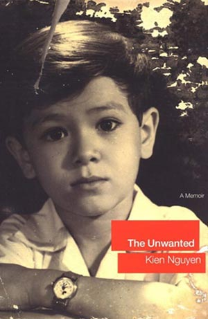
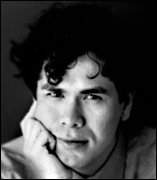

Lời ghi chú của tác giả
Cuốn Thân Phận Dư Thừa là hồi ức thủa ấu thơ và thời niên thiếu của tôi ở Việt Nam. Nó xuất phát từ những kỷ niệm sống động của tôi trong những năm này và được bổ sung thêm bằng sự hồi tưởng của mẹ tôi và em trai tôi. Kính dâng mẹ Người đưa con vào đời và kính tặng ông Frank Andrews người đã mang cho tôi một đời sống mới. Chân thành cảm tạ Aexandra Bennett và Scott Morgan đã tạo cảm hứng cho tôi viết cuốn này. Judy Clain đã cho tôi cơ hội trở thành văn sĩ. Fiona và Jake Eberts có niềm tin nơi tôi ngay từ thủa ban đầu. Eaine Gartner vơi’ sự có mặt tận tình. Michaela Hamilton đã giúp tôi trau chuốt lời văn. Peter Miller với trái tim sư tử đã hỗ trợ tôi từng bước trên đường sự nghiệp. Em Nguyễn Bé Ti đã là đứa em yêu quí của tôi. Nguyễn Jimmy đã giúp tôi đi lại con đường trong ký ức. Ilona Price và Jason Goodman về sự nồng nhiệt và rộng lượng. Joanna Russco-tabeek đã dành cho tôi nhiều bữa ăn miễn phí tai tiệm Painoteca. Lisa Sharkey với sự khích lệ cần thiết. Milan Tina với một tình bạn chân thành. Đặc biệt xin cảm tạ tất cả quí vị tại cơ sở xuất bản PM & Little, Brown đã giúp tôi thể hiện từ thân phận dư thừa trong ký ức trở thành một tác phẩm. Và đặc biệt gởi tới chị Loan, dù nay chị ở bất cứ nơi đâu, em cũng không bao giờ quên chị.